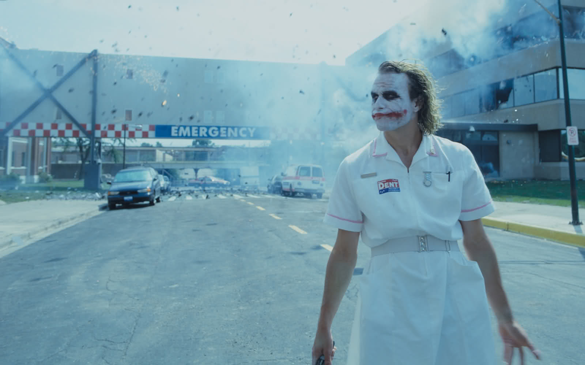
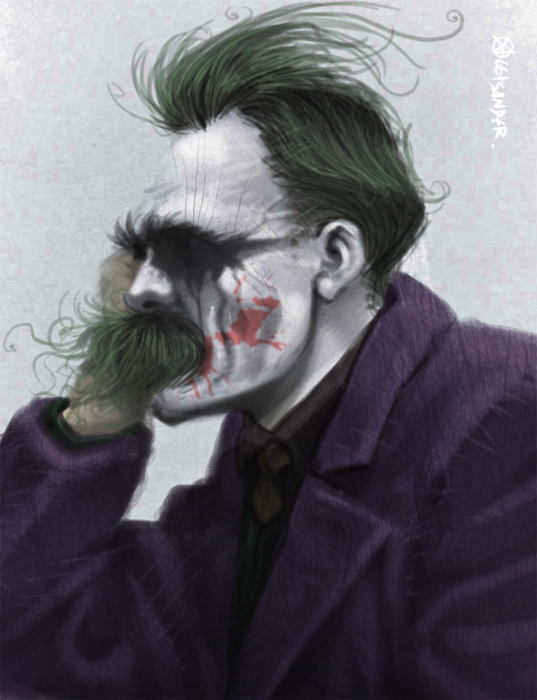

El Caballero Oscuro y la filosofía de Nietzsche

Fuente: Spiritual Healing
Tú... Tú no tienes las agallas de dejarme caer, ¿o sí? Esto es lo que pasa cuando una fuerza imparable pelea contra un objeto inamovible. Así que, en realidad eres incorruptible, ¿no es así? No, no vas a matarme por algún sentido inadecuado de moralidad, y yo no te asesinaré porque tú eres muy divertido. Creo que nuestro destino es hacer esto eternamente.
La cinta El Caballero de la Noche no se molesta en ocultar que entre en sus influencias está el filósofo alemán Friedrich Nietzsche, aquel que escribiera la mayor parte de sus mejores obras bajo síntomas de locura; crítico de la moral y religión de la sociedad de su tiempo.
Entre sus escritos, las ideas más célebres del filósofo son las del Superhombre y el Eterno Retorno. Sobre la primera concluye que el comportamiento del ser humano debe regirse por la voluntad de crear, existir y vencer el dolor de obtener una fortaleza, pues el hombre sólo aspira a ser un ente más poderoso, a un estado más elevado del ser humano, que por medio de sus actos y sus pensamientos se gobierna a sí mismo. Y por otro lado, “la eternidad es un círculo”, pues los mismos sucesos se repiten innumerables veces y el hombre debe encontrar el amor al propio destino, de tal manera que si su vida se repitiera de la misma forma por toda la eternidad, la aceptara sin desear que nada hubiera sido diferente.
En la cinta, donde se muestra a un Joker perturbador que resulta intelectual y emocionalmente fascinante, el personaje se acerca a una filosofía tergiversada que pareciera ser la de un Nietzsche caótico, utilizando aforismos y temas recurrentes del filósofo alemán. En la escena del asalto al banco, basándose en el famoso aforismo “Lo que no me mata, me hace más fuerte”, dice: “Yo creo que lo que no te mata simplemente te hace más… extraño”. Si Nietzsche enseña cómo se filosofa a martillazos, El Joker es el filósofo de la dinamita, la pólvora y la gasolina, y como tal, cuestiona violentamente las leyes, las convenciones sociales, la moralidad y las reglas de cualquier tipo.

Fuente: Aletsander
La única forma sensata de vivir en este mundo es sin principios.
Otro tema proveniente de la filosofía nietzscheana, de La genealogía de la moral, es la moral de amos y esclavos, que distingue entre 2 clases de moral: la del amo, asociada con la voluntad de poder, la vitalidad, el egoísmo y la fortaleza; y la del esclavo, asociada a la humildad, la compasión, el altruismo y la igualdad.
El Joker, al despreciar el sistema moral imperante, origina su propio sistema de valores en el que recrea un sentido extraño del caos y la justicia. “Su moral, su ética… es una gran mentira”. Para El Joker, la moralidad actual es una ilusión. El bien y el mal surgen de su propia voluntad de poder: es su propio juez, su propia ley, ninguna de sus acciones es causa de remordimiento, sino de auténtica libertad. Comprende los conceptos nietzscheanos de moralidad y los artificios de planeación y control de “los conspiradores”, así como el poder que tiene para romper tales planes a través del caos.
Instaura una pequeña anarquía, altera el orden establecido, y todo se convierte en caos. Soy un agente del caos. ¿Y sabes algo del caos? Es justo.
En gran medida somos espectadores de las acciones de El Joker, que a partir de un contexto filosófico pueden interpretarse como dilemas morales que El Joker plantea a la humanidad. En la cinta, incita a unos y a otros a tomar decisiones morales abruptas, como asesinar o dejarse morir. Por ejemplo, cuando El Joker rompe el taco de billar y pregunta a tres candidatos “quién quiere unirse a nuestro equipo”, está animando el instinto de supervivencia para que el más fuerte asesine a quienes siguen siendo sus compañeros de crimen. Cuando El Joker enfrenta a dos barcos para que se destruyan, uno con criminales a bordo y otro con personas comunes de Gotham, bajo la advertencia de que si un barco no hace estallar al otro, él hará estallar a ambos, nuevamente anima a que el egoismo y el instinto de las personas reclame su lugar. Otro de los dilemas ocurre cuando Batman se dirige a toda velocidad en la Batimoto, y El Joker lo reta a que lo arrolle -y vemos cómo Batman es incapaz de despojarse de sus preceptos morales-. O cuando hace elegir a Batman si éste debe salvar a Rachel Dawes o a Harvey Dent. Un dilema más es el mencionado en la cita que da inicio a este texto, cuando Batman salva a El Joker de caer.
El Caballero de la Noche puede leerse en una multitud de contextos, pero el acercamiento a la filosofía de Nietzsche brinda una perspectiva distinta. Por mi parte, me doy por recompensado si no vuelven a ver esta película de la misma manera.
Este texto apareció primero en Comicgram.